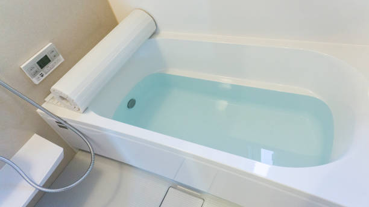

Kent Washington
info@freedomwalkintubs.pro
Kent Washington
info@freedomwalkintubs.pro

Upgrade to a safer bathroom today! Our walk-in tubs in Kent Washington prioritize accessibility, durability, and luxury. Perfect for seniors or anyone seeking spa-like relaxation at home.
Click Here To Call Us (877) 848-1711Enhance your bathing experience with premium walk-in tubs in Kent Washington . Designed for safety, accessibility, and relaxation, our walk-in tubs are perfect for individuals seeking a safer alternative to traditional bathtubs. Whether you’re dealing with limited mobility or simply want a luxurious bathing option, our products provide unmatched convenience and peace of mind.
Our walk-in tubs feature easy-entry doors, slip-resistant surfaces, and built-in seating to prioritize your safety and comfort. Equipped with therapeutic options like hydrotherapy jets and temperature control, these tubs not only ensure relaxation but also help alleviate stress, aches, and joint pain. Perfect for aging-in-place solutions, our walk-in tubs make independent bathing possible while adding value to your home.
At Walk In Tubs, we pride ourselves on offering top-quality walk-in tubs tailored to the unique needs of our customers in Kent Washington . Our team of experts handles everything from consultation to installation, ensuring a seamless process and superior results. With a range of designs and customizations available, you’re sure to find a solution that fits your style and budget.
Transform your bathroom into a safe, spa-like retreat. Contact us today to learn more about our walk-in tubs and how they can improve your lifestyle in Kent Washington . Your comfort, safety, and satisfaction are our top priorities.
Residential & commercial Walk In Tubs
Quality services at affordable prices
Immediate 24/ 7 emergency services


When it comes to upgrading your bathroom in Kent Washington a walk-in tub can provide both luxury and practicality, enhancing your home's accessibility and aesthetic appeal. Walk-in tubs come in a variety of styles and designs to complement any home, ensuring a perfect fit for your needs and preferences.
One popular style for homes in Kent Washington is the soaking walk-in tub, designed for relaxation with a deep, comfortable interior. Its sleek lines and modern features make it a stylish addition to any bathroom. For homeowners who want a more therapeutic experience, the whirlpool walk-in tub offers soothing jets that target sore muscles and improve circulation, ideal for anyone seeking relief from stress or chronic pain.
For those looking for space-saving solutions in smaller bathrooms, the corner walk-in tub utilizes corner space efficiently, offering a compact yet luxurious design. Walk-in tubs with built-in seating are another great option, providing extra convenience and comfort. These tubs often come with wide entry doors, making it easier to step in and out without any hassle.
No matter the design, walk-in tubs offer valuable benefits for homeowners in Kent Washington from increasing property value to enhancing safety and comfort. Whether you’re remodeling your bathroom or installing a new tub, investing in a walk-in tub is a smart choice that brings both function and style to your Kent Washington home.
Residential & commercial Walk In Tubs
Quality services at affordable prices
Immediate 24/ 7 emergency services
Elevate your bathroom's design with our custom tile surrounds for walk-in tubs. By allowing you to choose colors, patterns, and finishes, custom tile surrounds enhance the aesthetic appeal of your bathroom while providing a practical solution to waterproofing and maintenance.
In Kent Washington our custom tile surrounds are crafted with precision to fit seamlessly around your new walk-in tub. This not only elevates the overall appearance of your bathroom but also reflects your unique style and preferences, making your bathing area truly yours.
When you collaborate with us for your tile surround needs, you receive expert guidance on design choices and materials. Our skilled installers ensure that the final product not only looks spectacular but also functions effectively for years of enjoyment.

Our Safe Step walk-in tubs are designed with safety as the highest priority, providing you with a bathing solution that minimizes the risk of slips and falls. Equipped with innovative safety features, these tubs are ideal for seniors and individuals with mobility challenges .
With low entry thresholds, non-slip flooring, and ergonomic grab bars, Safe Step tubs enable easy access while promoting independence in daily routines. These designs allow you to enjoy your bathing experience without worrying about safety hazards, creating a tranquil environment for relaxation.
By selecting us for your Safe Step walk-in tub installation, you will receive not only a product focused on safety but also exceptional customer care and support. Our team will assist you with personalized consultation and tailored solutions, ensuring that your needs are met with efficiency and professionalism.

Walk-in tubs are not just a luxury; they provide numerous therapeutic benefits that enhance physical and mental well-being. The soothing jets and warm water promote relaxation and alleviate muscle tension while providing a safe bathing experience. Our therapeutic walk-in tubs are designed to engage both the body and mind, offering relief from everyday stresses and physical discomforts. At Walk In Tubs, we emphasize the wellness benefits that come with our walk-in tubs . Our expert staff will help you understand how these tubs can transform your bathing routine into a rejuvenating experience. By choosing us, you are investing in a healthier, happier lifestyle.

Investing in a walk-in tub is a significant decision, and we believe that access to safety and comfort should be available to everyone. That’s why we offer flexible walk-in tub financing options designed to fit various budgets in Kent Washington . We understand that financial concerns can be a barrier, but we are committed to working with you to find a solution.
Our financing plans come with competitive rates and terms that make the purchase of a walk-in tub affordable and manageable. We believe that everyone deserves the opportunity to enhance their bathing experience with a safer and more comfortable solution.
Choosing us for your walk-in tub needs means you’re partnering with a company that cares about your financial well-being. Our knowledgeable team will walk you through the available financing options, helping you select a plan that aligns with your budget without compromising on quality.

Everyone deserves a safe and enjoyable bathing experience without breaking the bank. Our affordable walk-in tub solutions are designed to provide high-quality products without compromising on safety features and comfort. At Walk In Tubs, we cater to clients looking for budget-friendly options that never compromise on quality. Our dedicated team guides you through selecting the best walk-in tub for your needs, ensuring that your investment is both economical and reliable. By choosing us, you are assured of value for your money and a commitment to your safety and satisfaction.
Regular maintenance and timely repairs are essential for keeping your walk-in tub in optimal condition, ensuring safety and longevity. Our professional team at Walk In Tubs offers comprehensive maintenance and repair services in Kent Washington ensuring your walk-in tub continues to perform at its best. We understand the intricacies of walk-in tub systems, and our commitment to customer service guarantees quick responses and high-quality workmanship. By choosing us, you are assured of professional service and care, allowing you to enjoy your walk-in tub without any worries.

If you or a loved one are managing chronic pain, our walk-in tubs are designed to help alleviate discomfort through soothing hydrotherapy and the restorative qualities of warm water. These tubs provide a safe, comfortable bathing solution while offering therapeutic benefits ideal for pain management.
Hydrotherapy treatments can enhance circulation and promote muscle relaxation, making baths a healing process for those dealing with conditions such as arthritis, back pain, and fibromyalgia. Our walk-in tubs are equipped with features that allow for adjustable temperatures and targeted jets, empowering you to customize your bathing experience for maximum relief.
When you choose us in Kent Washington you gain a reliable partner with expertise in therapeutic solutions. We will work with you to select the perfect tub model that meets your pain management needs, ensuring a comfortable and therapeutic bathing experience.

Aging in place is an important consideration for many seniors who wish to maintain independence in their own homes. Our walk-in tubs come equipped with features designed specifically for this purpose, ensuring safety and accessibility while providing an inviting bathing experience.
Low thresholds, slip-resistant surfaces, and easy-to-reach controls are just a few of the key features that make our walk-in tubs ideal for aging-in-place solutions . These thoughtful designs help to reduce the risk of falls and make bathing a more enjoyable and manageable experience for seniors.
By choosing our walk-in tub solutions, you are ensuring that you or your loved ones can age comfortably in place. Our expertise in consultation and installation reflects our commitment to enhancing the quality of life, making safety and comfort priorities in your home.
Years Experience
Expert Technicians
Satisfied Clients
Compleate Projects
At Freedom Walk-In Tubs, we understand that safety, comfort, and independence are paramount when choosing a walk-in tub. Proudly serving all cities in Kent Washington we specialize in providing premium walk-in bathtubs designed to meet the unique needs of seniors and individuals with mobility challenges. Our tubs offer a safe, accessible, and luxurious bathing experience, all while enhancing your bathroom’s functionality and style.
What sets us apart is our commitment to quality. We only offer the highest-grade walk-in tubs, built to last and equipped with advanced features such as slip-resistant floors, easy-to-operate doors, and soothing hydrotherapy jets. With over years of experience in the industry, we have refined our designs to provide an unbeatable bathing experience that combines safety and luxury. Our tubs are designed to give you peace of mind while enjoying a comfortable, relaxing soak.
Customer satisfaction is at the heart of everything we do. We take the time to listen to your specific needs, ensuring that your walk-in tub fits seamlessly into your lifestyle. Whether you’re looking to enhance safety or add a touch of luxury to your bathroom, Freedom Walk-In Tubs is your trusted partner. With our expert installation services and exceptional customer support, we promise a smooth and stress-free experience from start to finish.
Choose Freedom Walk-In Tubs for superior products, expert installation, and a commitment to enhancing your quality of life in Kent Washington . Your safety and satisfaction are our top priorities.
In today's world, ensuring your bathing experience is not only safe but also luxurious is paramount. Our luxury walk-in tubs are designed to provide the ultimate relaxation and comfort. With elegant designs and high-end features, these tubs offer a soothing escape after a long day. Our tubs are equipped with advanced hydrotherapy jets, adjustable heated seats, and user-friendly controls, all wrapped in a sleek and sophisticated package.
Choosing us means you are investing in quality and style. Our team specializes in custom installations tailored to your bathroom's design, ensuring that functionality and aesthetics go hand in hand. With a commitment to customer satisfaction and the highest safety standards, we take pride in being a leader in luxury walk-in tubs . Experience the difference that comes with unparalleled craftsmanship, durable materials, and an exclusive warranty that reflects our confidence in our products.
Hydrotherapy has long been recognized for its therapeutic benefits, and our hydrotherapy walk-in tubs bring this ancient practice into your home. These tubs are designed to provide a soothing spa-like experience that can help alleviate chronic pain, muscle tension, and stress. Whether you're recovering from an injury or simply seeking a way to relax, our hydrotherapy options offer the perfect blend of comfort and functionality.
Our hydrotherapy models include powerful jets strategically placed to target sore muscles and promote circulation. This form of therapy is particularly beneficial for seniors and those with mobility challenges, offering a safe, accessible way to enjoy soothing relief in the comfort of your home. Our knowledgeable staff is here to assist you in selecting the ideal hydrotherapy tub that aligns with your health goals and lifestyle preferences.
By choosing us, you gain access to custom installations tailored to fit your unique space, high-quality materials, and an installation process that minimizes disruption to your home. Experience the ultimate relaxation that our hydrotherapy walk-in tubs provide, and enjoy the peace of mind that comes with a trusted partner .
Don’t let a small bathroom limit your bathing options! Our compact walk-in tubs are expertly designed to maximize comfort and accessibility without compromising on style or functionality. In the bustling communities of Kent Washington we understand that space can be a constraint, which is why we offer innovative designs to fit even the smallest bathrooms.
These tubs provide all the safety features you need, including low thresholds for easy entry and slip-resistant surfaces, ensuring you can bathe with confidence. Despite their compact size, our models offer deep soaking capabilities that can enhance your bathing experience, making every bath feel like a spa day.
Choosing our compact walk-in tubs means choosing a company that prioritizes quality, safety, and customer satisfaction. With our expert consultation and installation services you can trust that your needs will be met with precision and care. Enjoy the luxury of a walk-in tub, even in the most limited spaces.
Accessibility is key to enjoying a safe and comfortable bathing experience. Our wheelchair-accessible walk-in tubs in Kent Washington are specifically designed to cater to individuals with mobility challenges, providing a safe and relaxing environment that promotes independence. With wider doors and built-in grab bars, our offerings ensure that users can enter and exit the tub with ease.
By opting for our wheelchair-accessible tubs, you’re not just making a purchase; you’re making a commitment to safety and wellness. Our walk-in tubs are equipped with slip-resistant surfaces and carefully designed seating to minimize the risk of falls. We pride ourselves on our personalized service, offering consultations to determine the best fit for your needs and preferences. Trust us to provide the highest quality in wheelchair-accessible bathing solutions.
Experience the invigorating sensation of air jet therapy in our walk-in tubs in Kent Washington . Designed for those who seek not only safety but also relaxation, our air jet therapy tubs provide a gentle, bubbling massage that soothes sore muscles and refreshes the spirit. These tubs are equipped with a unique air jet system that creates a spa-like experience in your own home.
Choosing our air jet therapy walk-in tubs means investing in a sanctuary of comfort. Our expert installation team ensures that every facet of your new tub is perfectly configured for your home, offering both safety features and luxurious amenities. Our tubs also come with customizable settings, allowing you to adjust the intensity and duration of your hydrotherapy experience. With our commitment to customer satisfaction and product excellence, we stand out as the premier choice for walk-in tubs with air jet therapy .
Enjoying a bath can be transformed into a luxury experience with walk-in tubs featuring heated seats. Imagine sinking into warm water with the added comfort of a heated seat, allowing you to relax and unwind. Our walk-in tubs with heated seats offer the ultimate indulgence, particularly in colder weather, ensuring maximum comfort every time you step in. At Walk In Tubs, we focus on merging safety with luxury in Kent Washington . Our experienced team is dedicated to guiding you through the selection and installation process, making it easy for you to enjoy a cozy and safe bathing experience. Choosing us means you are investing in your comfort and wellbeing, all while receiving exceptional service tailored to your needs.
A dual-drain system in walk-in tubs ensures rapid drainage, enhancing safety for users by minimizing the waiting time to exit the tub after a bath. This feature is particularly beneficial for seniors and individuals with mobility challenges, providing peace of mind during and after the bathing experience. Our experts at Walk In Tubs design walk-in tubs with dual-drain systems specifically for those who prioritize safety and efficiency. We pride ourselves on our commitment to providing accessible and innovative solutions for our clients. When you choose us, you’re choosing a company that values quality and safety above all else, ensuring your installation meets all your needs.
Everyone deserves a safe and comfortable bathing experience. Our bariatric walk-in tubs are designed with enhanced width and weight capacity to provide stability and support for larger individuals. Equipped with features like reinforced seating and slip-resistant surfaces, these tubs ensure a safe and enjoyable bathing experience.
When you choose our bariatric walk-in tubs, you’re selecting a product that prioritizes safety and comfort. Our customized solutions cater to your unique needs, ensuring that every aspect—from design to installation—meets your highest expectations. We stand by the quality of our products and our commitment to providing the best customer service in the industry. Trust us to bring safety and comfort into your bathing routines.
For those who appreciate the simplicity and joy of a long soak, our soaking walk-in tubs are the ideal choice. These tubs are designed for deep, relaxing baths, allowing you to immerse yourself completely in soothing water. With various depth and width options, our soaking tubs cater to all preferences.
, our soaking walk-in tubs are all about creating a luxurious retreat within your home. Their sleek design and therapeutic water depth let you unwind, helping alleviate stress and anxiety while revitalizing your body and mind.
Why choose us? Our dedication to quality means that every tub is made from durable materials designed to withstand everyday use. We guide you through every step, from choosing the perfect soaking tub to professional installation and maintenance, ensuring you enjoy an unparalleled bathing experience without worries.
Share the experience of relaxation and comfort with our two-person walk-in tubs. These spacious designs allow for quality time spent with loved ones, creating an intimate atmosphere while promoting relaxation. Whether it’s a soothing soak at the end of a long day or a special treat, our two-person walk-in tubs accommodate both accessibility and comfort.
Our tubs in Kent Washington feature safety elements that ensure ease of entry and exit, making them perfect for couples with varying mobility levels. Each unit provides twin seating options equipped with adjustable jets for a customizable experience that caters to both users.
Choosing our services is about more than just buying a tub; it’s about investing in shared moments of relaxation and well-being. Our expert consultation and installation teams are dedicated to providing you seamless service from start to finish, promising satisfaction with every experience.
Tailoring your bathing experience starts with our custom walk-in tub installation services. Every home is different, and our professional team specializes in creating solutions that fit your unique space, needs, and budget. Whether you require specific measurements or tailored enhancements, we provide customized installations that transform your bathroom into a relaxing retreat.
In Kent Washington we work closely with you to ensure every detail of your custom installation meets your specifications. From personalized design choices to features like non-slip flooring and adjustable jets, we strive to ensure your new walk-in tub meets your specific expectations and comfort levels.
With our expert installation teams, you will receive unparalleled service from consultation to completion. Our years of experience in the industry guarantee a seamless installation process, allowing you to begin enjoying your customized soaking experience in no time.
Converting your existing bathtub into a walk-in tub is a fantastic way to enhance safety while maintaining the versatility of your space. Our expert team at Walk In Tubs specializes in transforming your traditional bathtub into a safe and luxurious walk-in solution. we understand the importance of accessibility in every home, and our conversion services help you achieve that without the need for a complete bathroom renovation. We take care of every detail to ensure the installation process is smooth and efficient, making your transition to a safer bathing environment as seamless as possible. By choosing us, you are making a smart investment in your safety and comfort.
As we age, safety and comfort become increasingly important in our daily routines. Our walk-in tubs for seniors in Kent Washington are designed to address these concerns, providing a safe bathing environment that promotes independence. Featuring low thresholds, built-in grab bars, and non-slip surfaces, our walk-in tubs help ensure every bath is safe and enjoyable.
When you choose our walk-in tubs for seniors, you're investing in long-term comfort and peace of mind for you and your loved ones. Our team is committed to delivering personalized solutions tailored to individual needs, ensuring each installation enhances accessibility and quality of life. Let us provide you with a safe bathing experience that enhances your independence and well-being.
The versatility and functionality of our walk-in tubs with shower combos make them an ideal addition to any bathroom. These innovative solutions allow you to enjoy the comforting soak of a walk-in tub while also providing the convenience of a quick shower, making them perfect for users with varying bathing preferences in Kent Washington .
Our tubs are designed for easy access, featuring anti-slip surfaces and grab bars, ensuring safety during both bathing options. This dual functionality not only improves usability but can also add significant value to your home, making it a worthwhile investment.
Choosing us for your installation means receiving a high-quality product tailored to meet your specific needs. Our expert team is here to assist you in selecting the perfect model that balances safety, style, and comfort. Enjoy the best of both worlds with our walk-in tubs with shower combos.
Sustainability is essential, which is why our eco-friendly walk-in tubs are made from environmentally conscious materials and designed to conserve water. Enjoy guilt-free relaxation while being kind to the planet, without sacrificing luxury or performance.
, our eco-friendly walk-in tubs incorporate energy-efficient technologies that promote water conservation. These tubs thrive on functionality, ensuring that you not only enjoy your time inside but also take pride in your contribution to environmental sustainability.
Choosing us means committing to a greener future. We provide flexible installation options to help you make an eco-friendly choice that enhances your lifestyle without compromising on comfort or style.
For places where safety and accessibility are paramount, especially in public facilities and homes of seniors or individuals with disabilities, ADA-compliant walk-in tubs are essential. These tubs are designed with specific features such as grab bars, low thresholds, and adjustable spray fixtures that comply with the Americans with Disabilities Act. At Walk In Tubs, our team is dedicated to providing safe bathing solutions that uphold the highest standards of accessibility. We ensure you receive a product that meets your needs and complies with relevant regulations, providing peace of mind for you and your loved ones. When you choose us, you’re making a commitment to safety and dignity for all.
Get the safety and comfort of a walk-in tub without the long wait! Our fast-install walk-in tubs are designed for quick and efficient installation, allowing you to enjoy your new bathing experience in no time. In the busy communities of Kent Washington we understand that convenience is a top priority, and our expert team is committed to serving your needs.
These walk-in tubs are engineered for rapid setup without compromising quality and safety features. You can have peace of mind knowing that even with a fast installation, our tubs meet the highest industry standards.
By choosing us for your fast-install walk-in tub, you can benefit from our extensive experience and exceptional customer service. We strive to make the process as smooth and quick as possible, ensuring that you are delighted with your new tub and enjoying the benefits without lengthy delays.
Installing a walk-in tub in your home in Kent Washington offers numerous benefits, especially for individuals seeking increased safety, comfort, and independence. As we age or face mobility challenges, everyday tasks like bathing can become difficult and dangerous. A walk-in tub provides a safe, accessible, and luxurious bathing experience for people of all ages.
1. Enhanced Safety and Accessibility
Walk-in tubs are designed with a low-entry threshold and built-in grab bars, making them ideal for those with limited mobility. The ability to step into the tub without worrying about tripping reduces the risk of slips and falls. This is crucial in a city like Kent Washington where a large portion of the population may be aging or have physical limitations.
2. Health and Therapeutic Benefits
Walk-in tubs are often equipped with hydrotherapy features, such as water jets and air bubbles, which can help relieve muscle tension, reduce pain, and promote better circulation. In Kent Washington where the warm climate can sometimes lead to muscle fatigue or discomfort, hydrotherapy provides the perfect solution to unwind and relax after a long day.
3. Increased Home Value
Installing a walk-in tub can be an excellent investment, especially for homeowners in Kent Washington looking to make their homes more attractive to potential buyers. Many buyers today are looking for homes with modern, accessible features, and a walk-in tub adds both functionality and luxury to your bathroom.
4. Independence and Comfort
Walk-in tubs allow individuals to bathe independently without assistance, maintaining privacy and dignity. The convenient features such as a built-in seat and easy-to-use controls make the bathing experience enjoyable and stress-free, which is ideal for residents in Kent Washington .
In conclusion, installing a walk-in tub in Kent Washington enhances safety, improves health, and increases the comfort and value of your home. Whether you're aging in place or seeking an accessible bathing solution, a walk-in tub is an excellent addition to your home.
Kent is a city in King County, Washington, United States. It is part of the Seattle–Tacoma–Bellevue metropolitan area and had a population of 136,588 as of the 2020 census, making it the fourth-largest municipality in greater Seattle and the sixth-largest in Washington state. The city is connected to Seattle, Bellevue and Tacoma via State Route 167 and Interstate 5, Sounder commuter rail, and commuter buses.
Freedom Walk In Tubs provides expert consultations to help you choose the perfect walk-in tub for your needs .
Contact Freedom Walk In Tubs today to schedule a free in-home consultation .
Freedom Walk In Tubs offers a wide range of walk-in tubs, including soaker tubs, hydrotherapy tubs, and bariatric tubs, .
Yes, Freedom Walk In Tubs frequently offers promotions to make walk-in tubs more affordable for customers .
Yes, walk-in tubs from Freedom Walk In Tubs are designed to meet ADA standards, ensuring accessibility in Kent Washington .
Walk-in tubs provide hydrotherapy, which can help relieve pain, improve circulation, and reduce stress for residents in Kent Washington .
Walk-in tubs enhance safety, comfort, and property value, making them a great investment for homeowners in Kent Washington .
Yes, modern walk-in tubs from Freedom Walk In Tubs are energy-efficient and designed to minimize utility costs .
Yes, walk-in tubs are versatile and can be enjoyed by people of all ages .
Standard walk-in tubs vary in size, but Freedom Walk In Tubs can provide options that suit your bathroom in Kent Washington .
Walk-in tubs are low-maintenance and built to last. Freedom Walk In Tubs offers durable products with easy cleaning options .
Look for safety features, therapeutic jets, quick-drain systems, and comfortable seating. Freedom Walk In Tubs in Kent Washington offers customized options.
Yes, walk-in tubs are designed with safety features like grab bars, non-slip surfaces, and low thresholds, making them ideal for seniors .
Yes, Freedom Walk In Tubs offers models with quick-drain systems for added convenience .
The process involves removing your old tub, making any necessary adjustments, and installing the walk-in tub. Freedom Walk In Tubs ensures a seamless process in Kent Washington .
Walk-in tubs provide safety, comfort, and therapeutic benefits, especially for seniors or individuals with mobility challenges. Freedom Walk In Tubs offers high-quality solutions to enhance your bathing experience .
Cleaning is simple with non-abrasive cleaners and regular maintenance. Freedom Walk In Tubs provides guidance for proper care in Kent Washington .
Absolutely! Freedom Walk In Tubs provides a variety of customization options to match your preferences and needs .
Yes, Freedom Walk In Tubs specializes in bathtub-to-walk-in tub conversions for homeowners .
Yes, hydrotherapy features in walk-in tubs can alleviate arthritis pain and improve joint mobility for residents .
Most walk-in tubs are designed to fit standard bathtub spaces. Freedom Walk In Tubs can assess your bathroom in Kent Washington and provide recommendations.
Yes, Freedom Walk In Tubs offers warranties to ensure peace of mind and protect your investment .
Yes, walk-in tubs are equipped with safety features to minimize fall risks, making them ideal for residents in Kent Washington .
Installation typically takes one to two days, depending on your bathroom setup. Freedom Walk In Tubs ensures quick and professional service .
Yes, Freedom Walk In Tubs offers walk-in tubs with hydrotherapy features to improve your bathing experience in Kent Washington .
Professional installation is recommended to ensure safety and functionality. Freedom Walk In Tubs provides expert installation .
Yes, Freedom Walk In Tubs offers compact designs that fit perfectly in small bathrooms across Kent Washington .
Yes, Freedom Walk In Tubs provides flexible financing options to make your walk-in tub installation affordable .
Modern walk-in tubs are designed to be water-efficient without compromising functionality. Freedom Walk In Tubs offers eco-friendly options in Kent Washington .
The cost varies based on the features and installation requirements. Contact Freedom Walk In Tubs for a free estimate tailored to your needs in Kent Washington .
I’m so glad I chose Freedom Walk In Tubs in Kent Washington [State Abbreviation]. The installation was fast, and the tub is exactly what I needed for safety and comfort. I can now enjoy my bath with confidence. I highly recommend their services to anyone in need.
Profession
I’ve never felt safer in the bathroom since installing my Freedom Walk In Tub in Kent Washington [State Abbreviation]. The installation team did an outstanding job, and the tub itself is high-quality. It’s a relief to finally have peace of mind when bathing. I highly recommend this company.
Profession
I had a fantastic experience with Freedom Walk In Tubs in Kent Washington [State Abbreviation]. Their team was professional, and the installation was done quickly and efficiently. The walk-in tub is safe, comfortable, and exactly what I needed. I highly recommend their services.
Profession
Kent WA Walk In Tubs Pros
(877) 848-1711
info@freedomwalkintubs.pro
09.00 AM - 09.00 PM
09.00 AM - 12.00 PM